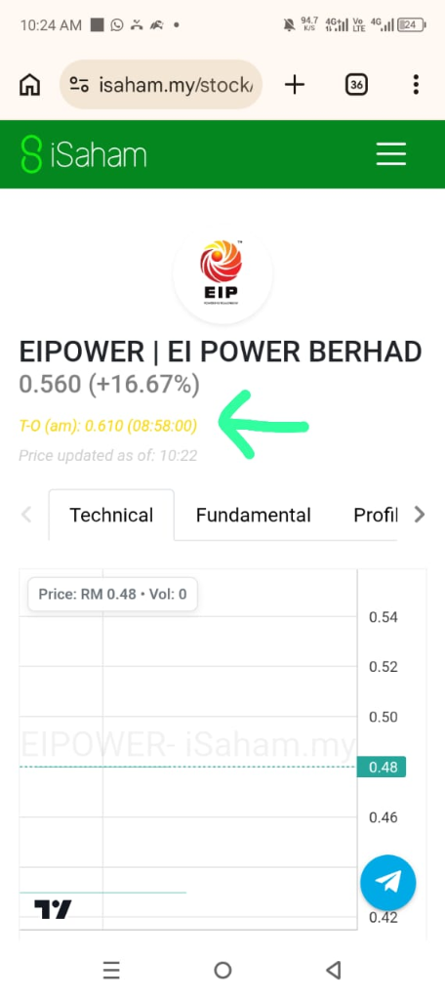
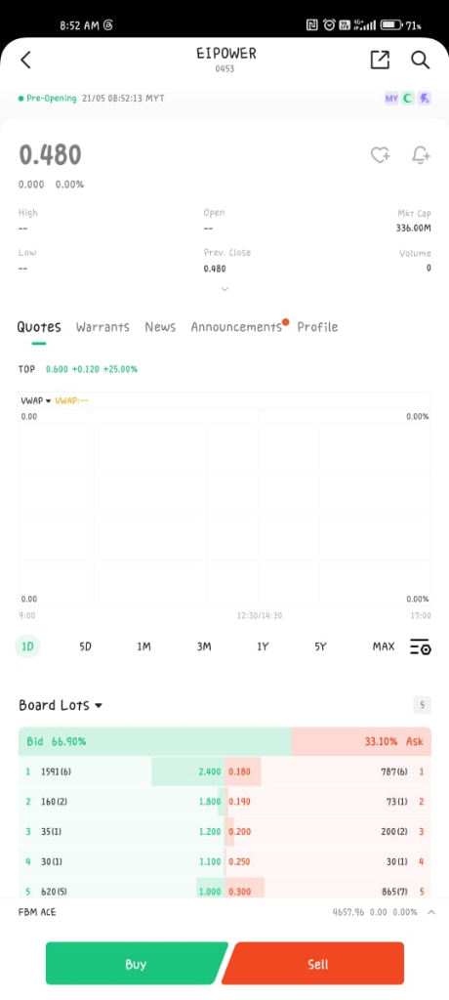
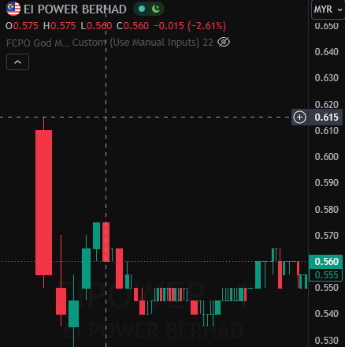

Visual Scalping Playbook (tf1M)
Dedicated breakdown of real-life IPO charts and order book dynamics to understand the Standard Operating Procedure perfectly.
Step-by-Step Guide: The 2 Listing Day Techniques (Scalp vs Hold)
TECHNIQUE 1: SOP Q-Sell Pre-Open (For Scalping / Capital Protection)
Why? For risky or average counters, the sharks usually dump their holdings immediately in the first minute. Waiting for the market to open at 9:00 AM before selling causes latency (lag) and forces you to cut losses at very low dump prices.
Execution Steps:- Monitor TOP (8:50 AM - 8:58 AM): Check the iSaham T-O (am) or the TOP indicator on your trading app (e.g. Moomoo) to gauge the stability of the matched price.
- Confirm Stability: Between 8:58 AM - 8:59 AM, the TOP price is usually stable and reflects the actual opening price.
- Place Q-Sell Limit Order: Put a Sell Limit Order at or below the TOP price (e.g. if TOP is 0.610, place a Limit Sell at 0.600 or 0.610).
- Automatic Matching: Per the exchange system, your order will automatically match at the highest official opening price (RM 0.610) right at 9:00:00 AM!
TECHNIQUE 2: SOP Hold & Ride (For Swing / Maximum Profit)
Why? For premium Grade A counters with strong cornerstone investors, sharks will keep aggressively buying these shares after the open. This produces a continuous series of green candles (New Highs), allowing us to bank multiplied profits.
Execution Steps:- Verify Pre-Open Bid Depth: Ensure the buy queue (Bid) on the order book is very thick and overflowing compared to a very thin sell queue (Ask).
- Let the Market Open: Do NOT place any early sell orders. Let the 9:00 AM bell ring and let the shares start trading.
- Mark M1 Support (tf1M): Use the 1-minute timeframe. Mark the lowest price of the First Minute (M1) candle as your emergency base support.
- Lock the Decision on Minute 2: If the Second Minute candle closes above the M1 support and makes a New High, continue HOLDING safely.
- Use a Trailing Stop: Move your exit target below the lowest (low) of the previous minute's candle. Keep holding as long as the trend stays up.
- Exit Immediately When Support Breaks: If a candle closes below the previous minute's support, send Limit/Market Sell immediately to lock in profits.
"For Grade B/C counters or Extreme Premium Grade A (>100%), wait for a stable TOP at 8:58 AM on iSaham / Trading App, then Q-Sell (Limit Sell) immediately during Pre-Opening for 100% capital safety!"
"For normal premium Grade A counters, let the market open, watch tf1M, and keep HOLDING as long as the Second Minute candle does not break the First Minute support and keeps printing consecutive New Highs!"
Scalper's Dilemma: When to Q-Sell Early vs. When to Hold & Ride?
A very logical question: "If I Q-Sell early during Pre-Open, won't I miss out on profits if the counter keeps rocketing after the open like SunMed?"
The key lies in the Hunter Grade (IPO Share Grade) and the Strength of the Pre-Opening Session. We don't guess the future — we act according to statistical probability and grade data:
SOP for Grade A Counters (Star IPOs)
Suitable for premium counters with extreme subscription (oversubscription > 50x) and solid support from renowned Cornerstone Investors (like SunMed / Sunway Healthcare). *Except if it opens at Extreme Premium (>100%), see the explanation below.
- Pre-Open Character: Buy queue (Bid) is very thick in market depth (Queue Depth), while the sell queue (Ask) is very thin. TOP rises steadily.
- SOP Strategy: Do NOT Q-Sell early! Let the market open at 9:00 AM, then watch tf1M for the New High Hold Condition. Sharks are aggressively buying this stock, so the probability of it rising after the open is very high.
- Objective: Maximize profits by riding the trend momentum.
SOP for Grade B & C Counters (Risky Counters)
Suitable for average counters with moderate subscription rates (5x to 25x), no big-name cornerstone, and exposure to panic dumping at the open (like EI Power, Empire Premium).
- Pre-Open Character: TOP is inconsistent; the order book shows a heavy pile-up of sellers (Ask) in the final minutes (8:58 AM - 8:59 AM) ready to dump prices.
- SOP Strategy: PRIORITIZE CAPITAL SAFETY. Immediately Q-Sell with a Limit Sell at or below the TOP price before the bell rings. This prevents you from getting trapped in a disastrous First Minute plunge like EI Power.
- Objective: Lock in capital and consistently collect opening gains without any trapped risk (Zero-Risk compounding).
What about the SkyeChip Berhad case? SkyeChip is actually a true Grade A counter (95.03x oversubscription and hot attention from Penang's IC Design industry). Yet it still suffered a disastrous plunge in Minute 2. Why?
Root Cause Analysis: SkyeChip opened at RM3.50 versus an IPO price of RM0.88 — an Extreme Premium of +297.7%! At such levels, Cornerstone Investors and Institutional Allocators were holding nearly 3x profits before the market even opened. This triggered very aggressive institutional dumping to lock in their festive profits, easily overwhelming any buying strength.
📢 Extra Scalper Formula: Even if a counter is Grade A, if the TOP opening price shows an Extreme Premium above 100%, you MUST cancel the Hold & Ride strategy and switch to Path 2 (Q-Sell Pre-Open) or Immediate M1 Exit to protect your capital!
Don't worry about missing profits on Grade B counters. Statistics show that 78% of Grade B counters experience rapid dumping in the first minutes of listing. Q-Sell Pre-Open is your "capital safety insurance". Let a little profit go on counters that rise, as long as we are 100% safe from severe losses on counters that plunge badly like EI Power!
Why is the 1-Minute Timeframe (tf1M) So Critical?
The first day of listing (Listing Day) is a lightning-fast battlefield. Using larger timeframes like 5m, 15m, or Daily is a fatal mistake because crash or surge patterns happen within the very first minutes.
The Scalping SOP requires us to monitor the 1-Minute Timeframe (tf1M) to detect mass-selling sentiment shifts (profit-taking) immediately to save our capital. Click on any image below for full-screen zoom to examine price details and charts closely.
1. SkyeChip Berhad: The Minute 2 Plunge

Chart Analysis & Plunge Anatomy:
- First Minute (M1): Price opens high with a strong surge. The first minute always looks bullish due to retail panic buying (FOMO) and early order matching. The M1 candle creates a strong *support* (lower support) line.
- Second Minute (M2) - The Decisive Point: Notice the big red candle in Minute 2. Selling pressure from early investors (institutions, cornerstone, promoters, or syndicates) begins to be released.
- Support Breached: As soon as price breaks below the lowest level of Minute 1 (Lowest price of M1 candle), **the SOP must be activated**.
- The Subsequent Fall: After M1 support breaks, SkyeChip's price keeps sliding from the highs (above 3.75) down to below 2.50 with no attempt to recover.
- 📌 Important Note (Same pattern as Empire & Inspace): The same thing happened to **Empire Sushi** and **Inspace Creation**. Minute 2 is the decisive point. If support breaks, close position/cut loss is mandatory!
2. Sunway Healthcare (SunMed): The New High Hold Condition

Chart Analysis & Trend Riding:
- First & Second Minutes: Unlike SkyeChip, SunMed shows very aggressive buying support. The Second Minute candle does not break the First Minute support — it keeps holding.
- "New High" Consistency: The chart shows a continuous series of green candles breaking previous highs consecutively. Every pullback is very shallow and controlled.
- Volume Confirmation: Strong green candles (M1 & M2) support the price rise from 1.70 to beyond 1.88, showing that sharks (institutions) are absorbing all retail selling.
- Trailing Stop Action: For counters like this, there is no need to panic sell. You can **hold and trail stop** (moving your profit-taking level to the lowest level of the previous minute's candle).
- 📌 Important Note (SunMed Blueprint): Only hold an IPO past the Second Minute if it keeps printing *New Highs* with solid volume on tf1M.
3. Listing Day Pre-Open Order Book: The 8:58 AM Queue Depth

How to Analyze the Order Book:
- Detecting Real Hype: Between 8:30 AM and 8:55 AM, the queue price (Theoretical Opening Price - TOP) can be manipulated by placing big buy orders and cancelling them in the last minute.
- The 8:58 AM Window: This is the period where matched prices start stabilizing and big investors can no longer cancel orders at will.
- Bid vs Ask Depth: The image (SkyeChip example) shows a strong **Bid** price supporting below 4.400 with high queue volume (7.985M), while **Ask** (sellers) are ready at **0.580**, **0.750**, and **0.800**.
- Spread & Volume: Always compare accumulated buy volume (Bids) vs accumulated sell volume (Asks) around the TOP price. If Ask volume spikes suddenly at 8:59:30 AM, it signals dumping (panic selling) will happen as soon as the market opens.
- 📌 Pro-Tip: Use the order book depth on your Moomoo platform a few minutes before listing starts to plan whether to sell with a **Limit Order** at the opening, or be ready with a **Market Order** if selling turns aggressive.
4. Empire Premium Food Bhd: The Minute 2 Support Break

Chart Analysis & Plunge Anatomy:
- First Minute (M1): A solid green candle surges up rapidly as soon as the bell rings. However, resistance builds at the yellow line at **1.18**.
- Second Minute (M2): Very strong profit-taking pressure begins. Notice the first long red candle that breaks through Minute 1's opening price and the 1.18 support line (marked with the yellow arrow).
- Immediate Plunge: Refusing to cut loss in Minute 2 has severe consequences. Price slides down rapidly from **1.18** to the low of **1.00** before closing weak at **1.06**.
- 📌 Important Note (User Experience): This counter proves the "Minute 2 Rule" is absolute. Anyone allocated Empire Premium shares who entered right at the market open suffered heavy losses if they held past the Second Minute.
5. Inspace Creation Berhad: Break of Structure (BOS) & Support Failure

Chart Analysis & Break of Structure (BOS):
- First Minute (M1): Inspace surges and builds early resistance/support at **0.285** (shown by the yellow arrow on the left).
- Break of Structure (BOS): As soon as the Minute 2 red candle breaks **0.285** (marked by the blue box and red **BOS** label), the bullish structure is officially broken.
- SOP Action: Per the SOP, a support break means **close position / cut loss immediately**. Delaying the sale hoping price will recover is a fatal mistake.
- Result of Broken Structure: The chart shows the market staying weak below the 0.285 BOS level, stuck in a passive accumulation zone without any recovery, closing low at **0.265**.
- 📌 Important Note (Inspace Takeaway): Failure to hold the first candle's support level means supply exceeds demand. Protect your capital by closing your position immediately.
6. EI Power Berhad: The 1st-Minute Collapse & Pre-Open Q-Sell Strategy
Sometimes, some IPO counters don't wait until the Second Minute to fall. The best example is EI Power Berhad (Listing Day: 21 May 2026). As soon as the market opened at 9:00 AM, the First Minute (M1) candle plunged hard without giving any chance to act after the open. Therefore, if you want to play it as safe as possible (Zero-Risk Exit), you must know the SOP of monitoring the Theoretical Opening Price (TOP) and placing a Queue Sell (Q-Sell) during the Pre-Opening session.
1 Monitor TOP on iSaham (T-O)

On iSaham, you can check the T-O (am) column which updates every few seconds before 9:00 AM to know the expected stable opening price.
2 Monitor TOP on Trading App

In trading apps like Moomoo, check the TOP (Theoretical Opening Price) indicator at the top of the price during the Pre-Opening phase.
3 The First Minute Tragedy (M1 Plunge)

Due to panic selling and dumping by sharks right at the open, the price plunged instantly with no chance to cut loss at the market opening.
Understand the tf1M SOP Clearly?
Always discipline yourself with this tf1M SOP on every Grade B counter's Listing Day. Protect your capital first before thinking about profits!